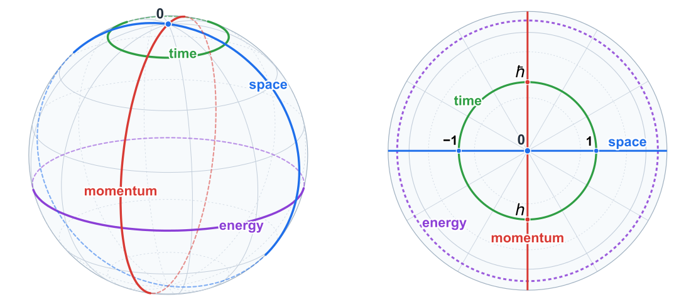

Every measurement ever taken, every proof ever written, and every computation ever run has been and ever will be finite. The most precise measurement ever made compared the ticking of strontium atoms at two heights one millimetre apart, within a single atomic cloud. It resolved a difference of 7.6 parts in 1021, the gravitational redshift across that millimetre [1]. That is a count of 267, or 67 bits. The longest count any computation has run through is the verification of the Collatz conjecture for every starting value below 271 [2], which is 71 bits. No instrument has ever registered, and no machine has ever enumerated, a count larger than 271.
So what exactly makes us believe in the infinite? The answer lies in the way our minds learn to extrapolate, imagining continuums and limitless extensions beyond what we can directly measure, compute, or comprehend. The belief in the infinite is a cognitive projection, a mental construct that simplifies our reasoning about the world we actually inhabit. It is rooted in tradition, convention, and dogma, very much like the belief in the flat Earth, or the geocentric cosmology once were. No empirical evidence has ever proven, nor can ever prove, even in principle, the existence of actual infinities.
Finite Ring Cosmology (FRC) is a research programme built on one simple argument: our Universe is finite. It is very large, but comprehensible and complete. Every observation is a part that can never exhaust the whole, and the one totality that is the sum of all its incomplete manifestations. This worldview goes back to Spinoza's Ethics [3] and Noether's theorems [4] that establish a self-contained reality, where laws follow from the internal constitution rather than being externally imposed. FRC rebuilds mathematics, physics and cosmology on a finite arithmetic, starting from the holographic principle. Its aim is to explain existing measurements and to make predictions that observation can refute. Every claim is entered in a public ledger, with its proof and, wherever a finite check exists, a program that anyone can run.
In the smallest such world, an observer of 13 cells lives inside a whole of 233, the least pair that the selection rules of the minimal-instance paper allow. Even this tiny world has space, time, light, mass, gravity and a sky. It runs in a tab of your browser on the laboratory page, and the essay A universe in a tab of your browser tells its story without equations.
What FRC derives
Standard physics takes Newton's law of gravitation, the rules of quantum probability and the forces between particles as given. FRC sets out to obtain each of them from its finite arithmetic. The gravity paper derives Newton's law from three stated physical identifications. The dark-sector paper explains galaxy rotation without a dark-matter particle. Below a minimum acceleration, the observed pull becomes the geometric mean of the Newtonian pull and that minimum, and every fitted input is stated. The quantum paper builds complex amplitudes and the probability rules of quantum mechanics inside the finite arithmetic. The fields paper develops the gauge forces, one generation of matter, and an account of why there are three. The ledger marks which results are derived and which rest on identifications, imported inputs or open steps.
Coincidences that become necessities
FRC treats standard “numerical coincidences” as algebraic necessities of its finite substrate. The Explicability tab details an extensive list of such results.
- The dark-energy fraction, ΩΛ. FRC derives the dark-energy density not as a physical fluid but as a structural ratio. The framework yields the exact algebraic output ΩΛ = tanh2(3π/8) ≈ 0.6837. This lands 0.19σ from the Planck 2018 best-fit value of 0.685 ± 0.007, with no parameter left to adjust (14:C7).
- The age of the universe: the octant lemma. In ΛCDM, the age of the universe and the Hubble time are distinct quantities that merely happen to be close today, the “age coincidence”. FRC makes this a mathematical necessity. It maps the universe’s timeline onto the phase cycle of a finite ring, and proves that the measured age is exactly an octant, one eighth of a turn of that cycle (14:C5). At the measured cosmological constant the octant is 13.79 Gyr, and the product of the age and the Hubble constant follows exactly: (π/4)/tanh(3π/8) = 0.950 (14:P3). The ΛCDM age becomes a hard structural boundary rather than a chronological accident (14:X3).
- Tsirelson’s bound, 2√2. In a Bell experiment, quantum correlations reach S = 2√2 ≈ 2.83 and never more, even though relativity alone would allow values up to 4. Standard quantum theory gets this ceiling from its continuous Hilbert space. In FRC the ceiling is an exact identity of the finite ring: S = 2(ζ8 + ζ8−1), so S2 = 8, where ζ8 is an eighth root of unity that every admissible ring contains (14:C6, 22:C17). An exhaustive machine search finds no measurement setting that goes beyond it. A finite world therefore reproduces quantum correlations at their full strength, not as an approximation (22:X7).
- The Koide formula. The masses of the electron, muon and tau satisfy Q = 2/3 to one part in 105, a ratio standard particle physics does not explain. FRC derives the exact 2/3 from the finite substrate. The three generations form a cube-root orbit, and the substrate’s quarter-turn fixes its amplitude at ρ2 = 1/2, so Q = 1/3 + (2/3)ρ2 = 2/3 (27:X10, 27:P8).
Falsifiable predictions
What separates FRC from unfalsifiable theories, like the string-theory landscape, is its extreme fragility. It operates on exact arithmetic with no free parameters beyond its one measured input, the de Sitter entropy, so it cannot be tweaked when observations disagree. It lists the explicit ways by which it lives or dies; the Predictions tab has them all.
- An exact dark-energy equation of state, w = −1. Combined fits from the Dark Energy Spectroscopic Instrument (DESI) prefer dark energy that evolves over time, a w0wa drift, at 3–4.2σ, though reanalyses contest this. FRC predicts w = −1 exactly, always and everywhere, because the cardinality of the universe cannot evolve. A confirmed drift falsifies its cosmological constant, Λ ∼ 1/Ω, outright (14:P4).
- A hard cutoff for stellar ages. The octant is not just the time since the Big Bang. It bounds every registered record at 13.79 Gyr, in every observational frame, so no object can ever be observed to be older. As the error bars on stellar ages shrink, one well-dated object older than this limit would be fatal to FRC. The oldest cluster population now sits 0.5σ below it (14:P2).
- A running acceleration floor, a0(z) ∝ H(z). Modified Newtonian Dynamics (MOND) describes galaxies with an acceleration scale a0, which it treats as a universal constant. FRC ties a0 to the Hubble rate H, so a0 must grow with redshift. The MUSE-DARK III survey already excludes a constant floor out to redshift 1.3 (00:P1).
- No fourth generation. The finite arithmetic has three generative roles, and these are the three fermion generations. The closed rank-five frame admits no more. A fourth generation of quarks or leptons is excluded, and so are a fifth force, TeV supersymmetry and a new dark-matter particle (00:P4).
How this site is organised
The Ledger is the public record of the programme's formal claims. Each row has a status: imported from established results, realised as a physical identification, derived, a prediction with the observation that would refute it, or open. A value that no observer inside the universe could ever read is marked Ω-hard rather than guessed. Where a claim admits a finite check, its row names the script, and the scripts run in your browser without installation. The Publications tab lists the papers, preprints and essays with their ledgers and packages. The Predictions tab gathers every falsifiable prediction with its refuting observation, its check and its source paper. The Explicability tab gathers, in the same form, what standard physics postulates or fits and FRC explains.
Essays and papers
Three essays set out the argument in prose. From Absolute Infinity to Relational Finitude follows the retreat of the infinite from cosmology, physics and society. Zero to One examines the definition of the number one as an act of creation. The Pursuit of Completeness follows the idea of a self-contained reality from Spinoza to Noether. Existence, Complexity and Truth in a Finite Universe gives the full argument, and Paradoxes of Infinity as Reductio ad Absurdum treats the paradoxes of infinity as a single reductio. The physics is set out in the ledgers of gravitation as phase synchronisation and of the dark sector.
The holographic principle, taken literally
Physicists have long treated infinity as a warning sign rather than an answer. A point-like electron has an infinite field energy, which quantum electrodynamics tames by renormalisation. A cutoff at the Planck scale makes the energy of empty space finite, yet still about 120 orders of magnitude above the measured value. Paradoxes of Infinity as Reductio ad Absurdum collects such cases.
The first positive clue came from black holes. In the 1970s Bekenstein and Hawking found that a black hole's entropy, the information hidden inside it, grows with the area of its horizon rather than with its volume [5], [6]. In the 1990s 't Hooft and Susskind turned this oddity into a principle [7], [8]. The physics inside a region is written on its boundary, as a hologram stores a scene on a flat plate, and each patch of the boundary holds only finitely much information.
Why take the principle literally? A horizon counts the states its interior could ever be in, and a black hole as heavy as the Sun has vastly more of them than one as heavy as a mountain. A continuous surface could not explain this growth, since a millimetre contains as many points as a galaxy. The area law counts states that can be told apart, not points. Beyond black holes the bound holds in covariant and quantum versions with stated ranges [9], [10], [11], and quantum field theory does not prove that every system has finitely many states. FRC's step from the bound to a finite world is set out, with every assumption it borrows, in De Sitter Entropy Estimates over Finite Holographic Substrate.
Our own universe has a horizon too. Distant supernovae, found in 1998 to be dimmer than expected, show that the cosmic expansion is accelerating. If a positive cosmological constant drives the acceleration, every observer is enclosed by an event horizon of finite entropy, even if space itself is not closed. The holographic principle alone does not make the universe finite. FRC reads the finite count of the horizon as the size of the whole world, and states this reading openly as its starting point.
Taken literally, the principle is the blueprint of the world rather than a limit on a deeper, continuous one. The whole state of the universe is written on one closed surface, and what an observer inside perceives (space, time and the sky) is that surface decoded from where the observer stands. Only one number comes from observation: the size of the world, read from the de Sitter entropy of our horizon.
The horizon
The opposite idea, that the world goes on forever, comes from the horizon we can see. Stand in a field, and the ground runs flat in every direction, so the natural thing is to extrapolate: flat, forever. Eratosthenes measured the curvature of the Earth twenty-two centuries ago, yet the ground still looks flat, because a very large thing and an infinite thing look alike from where we stand. Wherever our map of the world ends, the mind paints a horizon and calls it infinity.
None of this makes reality relative. Reality is absolute, with nothing outside it, and only our access to reality is finite. The mistake is to read the edge of the map as the edge of the world.
Four tests for infinity
Infinity entered mathematics as a convenience, through the limit, the real line and the completed set of all numbers, and it stayed because everything later rested on it. FRC argues that this habit of thought fails four separate tests.
It does not cohere. Naive set theory gathered all sets into one collection and ran into contradiction. Zermelo–Fraenkel set theory escapes by restricting which collections count as sets, and FRC does not call that theory inconsistent. FRC reads the restriction as a reason to doubt completed infinite totalities. Hilbert's hotel keeps the same number of guests when one more checks in, whereas every real count changes when one is added. Infinite arithmetic is consistent on its own terms, but nothing that can be measured or counted behaves like Hilbert's hotel. The reductio paper also reads von Neumann's number one, the set containing the empty set, as a metaphysical starting point rather than a contradiction.
It cannot be checked. Any evidence an observer could hold, whether an observation, a dataset or a proof, fits inside a large enough finite structure. Such evidence can say "larger than anything so far", but never "infinite". Every real observer has finite resources and can make only finitely many distinctions. The Undeclared Posit of Potential Infinity sets out the precise scope of this argument.
It is not needed. FRC does not claim that dropping one axiom dissolves every paradox. Hilbert's hotel needs a completed infinite number, and the Banach–Tarski paradox needs a form of the axiom of choice. Russell's paradox needs neither, since it comes from unrestricted set formation. The reductio paper treats these cases separately, and argues case by case that the finite procedures of calculation can be kept without treating any completed infinity as physical.
It makes evidence unreliable. This is the test physics cannot afford to fail. Douglas Adams's Infinite Improbability Drive works because, in a large enough universe, any event, however absurd, happens somewhere. In an infinite sequence of independent trials, an event of fixed non-zero probability occurs infinitely often, and arbitrarily long improbable runs occur almost surely. An observer inside such a run can receive a wildly unrepresentative record of the world. The conclusion rests on assumptions about the ensemble, independence and the measure, not on the word "infinite" alone.
In a finite world, information and deviations from the typical are bounded. Finiteness alone does not make a law necessary, so FRC's stronger claim is that its laws follow from the symmetries and counting rules of the finite arithmetic.
Complete, therefore finite
Two older ideas suggest what kind of finite structure the world must be. Spinoza called a thing finite when something of the same nature can limit it, and called reality infinite because nothing of its kind lies outside it. FRC reads Spinoza's point as completeness: reality is closed under its own operations, so it is finite but complete. Two and a half centuries later, Emmy Noether showed that conservation laws are not commands from outside a system but consequences of the system's own symmetries. There is no external lawgiver, and no external register from which the universe could be listed or foreseen.
The FRC papers state working premises in the same spirit. The universe exists, since even an attempt to deny it is something that exists. The universe is finite and complete, because two totalities would simply be two parts of one. Every view of the universe is partial, because a part cannot hold a complete description of the whole. Every measurement and experience is therefore a projection onto something smaller. FRC's finite treatment of Gödel's limits places the boundary at what a finite observer can resolve, as the reductio paper argues.
Finally, a mathematical structure that predicts what we observe and leaves no recorded distinction unexplained is not a model at a distance from reality. It is the reality, since nothing can reach an unrecorded reality behind it.
The finite world
What arithmetic could describe a complete, finite world? FRC requires that the world contain no smaller closed structure, and this requirement selects clock arithmetic with a prime number of positions. Picture a clock face with 13 hours instead of 12. You can count around it forever, just as you can walk forever on the finite surface of the Earth. With a prime number of hours, you can also divide by any number except zero. Other finite fields have a prime power of elements, but each of them contains a smaller field, so the requirement rules them out.
The clock can be read in two ways. A step of one position is identified with space, and multiplying every nonzero number by the same factor, with zero fixed, is identified with time. Their Fourier duals are momentum and energy. Relativistic Algebra over Finite Ring Continuum and the entropy paper set out these identifications. The observer lives inside this world, and the observer's own size sets its horizon.

In the figure, the horizon is the far pole and the equator lies halfway to it. Every great circle has a prime number of positions, so nothing here approximates a continuum. The marked residues are labels in the finite field, not instrument readings. The field has Ω = 4S + 1 elements, so a quarter-turn of the nonzero cycle has S steps. FRC identifies S with the de Sitter entropy, and reads its spatial and temporal faces as the area and the age of the universe, as the entropy paper states.
The real numbers survive as a chart laid over the finite territory. Classical results can be read off the chart, while every exact computation happens in the finite arithmetic, as a flat map serves a walker on a round Earth.
None of this makes the world small or static. A complete system with no outside cannot be foreseen from outside, while inside it structures form and complexity grows. A finite universe can therefore be creative. Its freedom is not an exemption from cause and effect, but the absence of any vantage point from which its future could be predicted.
Where the ideas come from
Black holes and holography. Maldacena conjectured that gravity inside an anti-de Sitter space is equivalent to a field theory on its boundary [12]. Ryu and Takayanagi read the entanglement entropy of the boundary from the area of an interior surface [13], and Van Raamsdonk argued that the connectedness of the interior is made of that entanglement [14]. These constructions keep a continuum, and they live in a space with a negative cosmological constant, unlike ours. FRC removes the continuum, so the boundary count is the whole state and the interior is its decoding.
The de Sitter horizon. Gibbons and Hawking showed that the de Sitter horizon has its own entropy and temperature [15]. Banks argued for a finite-dimensional Hilbert space in de Sitter quantum gravity [16], and Bousso bounded the entropy an observer can see when the vacuum energy is positive [17]. Fischler and Susskind asked what holography means for cosmology [18]. FRC reads these bounds as the definition of the world, which then has 4S + 1 elements with S the de Sitter entropy, as the entropy paper states.
Gravity as thermodynamics. Jacobson derived Einstein's equation from the area law and the Clausius relation on local horizons [19], and Padmanabhan developed this view at length [20]. Verlinde proposed gravity, and the dark-matter behaviour of galaxies, as entropic effects [21], [22]. Any such account must reproduce Milgrom's acceleration scale [23] and the radial acceleration relation of McGaugh, Lelli and Schombert [24]. FRC's metrology paper adopts Lineweaver and Patel's chart of all objects between the Compton and Schwarzschild limits [25]. FRC runs the other way from Verlinde, with no entropic force. Newton's law is the flux of a counting law, and the acceleration scale is the drive rate of the horizon.
It from bit. Wheeler's "it from bit" could serve as FRC's motto: every physical quantity takes its meaning from yes-or-no answers registered by a participating observer [26]. Landauer showed that erasing a bit costs energy, so information is physical [27], [28]. Zeilinger proposed that an elementary system holds one bit [29], and Lloyd computed the limits that energy and gravity set on computation [30], [31]. The digital tradition of Zuse [32], Feynman [33], Fredkin [34], Wolfram [35] and 't Hooft [36] takes the world to be a discrete computation. FRC agrees that every record is finite. The FRC world, however, is one prime field whose observers keep their own time, and whose quantum mechanics is exact rather than emergent.
Discrete spacetime. Penrose's spin networks [37], the causal sets of Bombelli, Lee, Meyer and Sorkin [38], [39], causal dynamical triangulations [40] and Bialynicki-Birula's lattice automata [41] build physics from discrete pieces. Cortês and Smolin, and Unger and Smolin, argued for a universe of unique events in which even the laws exist within time [42], [43]. Most of these programmes keep unbounded structures or recover a continuum in some limit. FRC is one complete, finite whole, with no limit left to take.
Quantum theory over finite fields. Wootters, with Gibbons and Hoffman, built quantum phase space on finite fields [44], [45], and Vourdas reviewed the Galois-field structure of finite quantum systems [46]. Schumacher and Westmoreland [47], and Chang, Lewis, Minic and Takeuchi [48], replaced complex amplitudes with finite-field ones. Lev proposed finite mathematics as the foundation of quantum theory [49], [50], and Carroll discretised quantum mechanics completely [51]. Spekkens showed how much of quantum behaviour follows from a limit on knowledge [52], and Rovelli made every state relative to another system [53]. These are FRC's nearest neighbours, and most of them treat finite fields as toy models. In FRC the prime field is the proposed physical substrate, and its own square root of minus one builds the complex structure. The observer is part of the system, as the quantum paper argues.
Finitism. Yessenin-Volpin rejected the completed infinite and the endless repetition of adding one [54]. Zeilberger called real analysis a degenerate case of discrete analysis [55], and Gisin argued that real numbers, with their infinite information, shape what physics can say about time [56]. The reductio paper develops the reductio these authors point towards, under an explicit condition of determinacy, and argues case by case for the finite procedures it keeps.
References
- T. Bothwell, C. J. Kennedy, A. Aeppli, D. Kedar, J. M. Robinson, E. Oelker, A. Staron and J. Ye, Resolving the gravitational redshift across a millimetre-scale atomic sample, Nature 602, 420 (2022).
- D. Bařina, Improved verification limit for the convergence of the Collatz conjecture, J. Supercomput. 81, 810 (2025).
- B. de Spinoza, Ethica, ordine geometrico demonstrata, in Opera Posthuma, Amsterdam (1677); English translation Ethics, in E. Curley (ed. and trans.), The Collected Works of Spinoza, vol. I, Princeton University Press (1985).
- E. Noether, Invariante Variationsprobleme, Nachr. Ges. Wiss. Göttingen, Math.-Phys. Kl. 1918, 235 (1918); English translation by M. A. Tavel, Invariant variation problems, Transp. Theory Stat. Phys. 1, 183 (1971).
- J. D. Bekenstein, Black holes and entropy, Phys. Rev. D 7, 2333 (1973).
- S. W. Hawking, Particle creation by black holes, Commun. Math. Phys. 43, 199 (1975).
- G. 't Hooft, Dimensional reduction in quantum gravity, in Salamfestschrift (1993), arXiv:gr-qc/9310026.
- L. Susskind, The world as a hologram, J. Math. Phys. 36, 6377 (1995).
- J. D. Bekenstein, Universal upper bound on the entropy-to-energy ratio for bounded systems, Phys. Rev. D 23, 287 (1981).
- R. Bousso, A covariant entropy conjecture, J. High Energy Phys. 1999(07), 004.
- R. Bousso, The holographic principle, Rev. Mod. Phys. 74, 825 (2002).
- J. Maldacena, The large N limit of superconformal field theories and supergravity, Adv. Theor. Math. Phys. 2, 231 (1998).
- S. Ryu and T. Takayanagi, Holographic derivation of entanglement entropy from AdS/CFT, Phys. Rev. Lett. 96, 181602 (2006).
- M. Van Raamsdonk, Building up spacetime with quantum entanglement, Gen. Relativ. Gravit. 42, 2323 (2010).
- G. W. Gibbons and S. W. Hawking, Cosmological event horizons, thermodynamics, and particle creation, Phys. Rev. D 15, 2738 (1977).
- T. Banks, Cosmological breaking of supersymmetry?, Int. J. Mod. Phys. A 16, 910 (2001).
- R. Bousso, Positive vacuum energy and the N-bound, J. High Energy Phys. 2000(11), 038.
- W. Fischler and L. Susskind, Holography and cosmology, arXiv:hep-th/9806039 (1998).
- T. Jacobson, Thermodynamics of spacetime: the Einstein equation of state, Phys. Rev. Lett. 75, 1260 (1995).
- T. Padmanabhan, Thermodynamical aspects of gravity: new insights, Rep. Prog. Phys. 73, 046901 (2010).
- E. Verlinde, On the origin of gravity and the laws of Newton, J. High Energy Phys. 2011(04), 029.
- E. Verlinde, Emergent gravity and the dark universe, SciPost Phys. 2, 016 (2017).
- M. Milgrom, A modification of the Newtonian dynamics as a possible alternative to the hidden mass hypothesis, Astrophys. J. 270, 365 (1983).
- S. S. McGaugh, F. Lelli and J. M. Schombert, Radial acceleration relation in rotationally supported galaxies, Phys. Rev. Lett. 117, 201101 (2016).
- C. H. Lineweaver and V. M. Patel, All objects and some questions, Am. J. Phys. 91, 819 (2023).
- J. A. Wheeler, Information, physics, quantum: the search for links, in W. H. Zurek (ed.), Complexity, Entropy, and the Physics of Information, Addison-Wesley (1990).
- R. Landauer, Irreversibility and heat generation in the computing process, IBM J. Res. Dev. 5, 183 (1961).
- R. Landauer, Information is physical, Physics Today 44(5), 23 (1991).
- A. Zeilinger, A foundational principle for quantum mechanics, Found. Phys. 29, 631 (1999).
- S. Lloyd, Ultimate physical limits to computation, Nature 406, 1047 (2000).
- S. Lloyd, Computational capacity of the universe, Phys. Rev. Lett. 88, 237901 (2002).
- K. Zuse, Rechnender Raum, Vieweg, Braunschweig (1969); English translation Calculating Space, MIT Technical Translation AZT-70-164-GEMIT (1970).
- R. P. Feynman, Simulating physics with computers, Int. J. Theor. Phys. 21, 467 (1982).
- E. Fredkin, An introduction to digital philosophy, Int. J. Theor. Phys. 42, 189 (2003).
- S. Wolfram, A New Kind of Science, Wolfram Media (2002).
- G. 't Hooft, The Cellular Automaton Interpretation of Quantum Mechanics, Springer (2016).
- R. Penrose, Angular momentum: an approach to combinatorial space-time, in T. Bastin (ed.), Quantum Theory and Beyond, Cambridge University Press (1971).
- L. Bombelli, J. Lee, D. Meyer and R. D. Sorkin, Space-time as a causal set, Phys. Rev. Lett. 59, 521 (1987).
- S. Surya, The causal set approach to quantum gravity, Living Rev. Relativ. 22, 5 (2019).
- J. Ambjørn, J. Jurkiewicz and R. Loll, Emergence of a 4D world from causal quantum gravity, Phys. Rev. Lett. 93, 131301 (2004).
- I. Bialynicki-Birula, Weyl, Dirac, and Maxwell equations on a lattice as unitary cellular automata, Phys. Rev. D 49, 6920 (1994).
- M. Cortês and L. Smolin, The universe as a process of unique events, Phys. Rev. D 90, 084007 (2014).
- R. M. Unger and L. Smolin, The Singular Universe and the Reality of Time, Cambridge University Press (2014).
- W. K. Wootters, A Wigner-function formulation of finite-state quantum mechanics, Ann. Phys. 176, 1 (1987).
- K. S. Gibbons, M. J. Hoffman and W. K. Wootters, Discrete phase space based on finite fields, Phys. Rev. A 70, 062101 (2004).
- A. Vourdas, Quantum systems with finite Hilbert space: Galois fields in quantum mechanics, J. Phys. A 40, R285 (2007).
- B. Schumacher and M. D. Westmoreland, Modal quantum theory, Found. Phys. 42, 918 (2012).
- L. N. Chang, Z. Lewis, D. Minic and T. Takeuchi, Galois field quantum mechanics, Mod. Phys. Lett. B 27, 1350064 (2013).
- F. M. Lev, Introduction to a quantum theory over a Galois field, Symmetry 2, 1810 (2010).
- F. M. Lev, Finite Mathematics as the Foundation of Classical Mathematics and Quantum Theory, Springer (2020).
- S. M. Carroll, Completely discretized, finite quantum mechanics, Found. Phys. 53, 90 (2023).
- R. W. Spekkens, Evidence for the epistemic view of quantum states: a toy theory, Phys. Rev. A 75, 032110 (2007).
- C. Rovelli, Relational quantum mechanics, Int. J. Theor. Phys. 35, 1637 (1996).
- A. S. Yessenin-Volpin, The ultra-intuitionistic criticism and the antitraditional program for foundations of mathematics, in Intuitionism and Proof Theory, Studies in Logic 60, North-Holland (1970).
- D. Zeilberger, "Real" analysis is a degenerate case of discrete analysis, in B. Aulbach, S. Elaydi and G. Ladas (eds), New Progress in Difference Equations (Proceedings of ICDEA 2001), Taylor & Francis (2004).
- N. Gisin, Mathematical languages shape our understanding of time in physics, Nature Physics 16, 114 (2020).